|
|
| hard corals text index | photo index |
| Phylum Cnidaria > Class Anthozoa > Subclass Zoantharia/Hexacorallia > Order Scleractinia > Family Euphylliidae |
| Galaxy
corals Galaxea sp.* Family Euphylliidae updated Nov 2019 Where seen? These small hard corals with tall, distinctive star-shaped corallites are commonly seen on many of our Southern shores. They used to be placed in Family Oculinidae. From Danwei's paper, the species found on many of our shores is Galaxea fascicularis. Features: Colonies (10-20cm), elsewhere are said to reach 5m in diameter. Colonies are dome-shaped, forming irregular boulders and mounds. Polyps and corallites about 1cm in diameter. Corallites made up of long tubes tipped with a distinctive star-shape pattern that resembles a crown. Near the top of the long corallites, they are joined together with a common skeleton that is smooth. The skeleton is thin and quite fragile. The polyps have short thin tentacles often with white tips. When fully expanded, the tentacles hide the skeleton structure. The polyps may produce very long sweeper tentacles (up to 30cm) that clear the surrounding area of competiting corals and other encrusting animals. Colours seen include brown, blue, green and purple. Galaxy friends: The spaces among the tubular corallites provide shelter for all kinds of animals (mussels, crabs, shrimps) often hidden deep within the colony. Galaxy babies: Galaxea fascicularis has a unique method of reproducing. There are two types of colonies. One type is a female colony that produces only red eggs. Another type is hermaphrodite that produces sperm and white 'eggs'. The eggs are not real eggs and help the sperm to float up to the surface where they can fertilise the real red eggs. Human uses: These corals are among those taken for the live aquarium trade. They often do poorly in captivity. They are fragile and break easily, and collection techniques usually result in poor specimens that quickly die from disease. In addition, their habit of producing sweeper tentacles make them poor tank-mates. Status and threats: Galaxea astreata is listed as globally Vulnerable and Galaxea fascicularis as Near Threatened by the IUCN. Like other creatures of the intertidal zone, they are affected by human activities such as reclamation and pollution. Trampling by careless visitors, and over-collection also have an impact on local populations. |
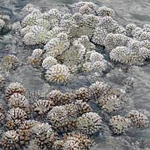 Some species may form fields of small colonies. Pulau Hantu, Jan 10 |
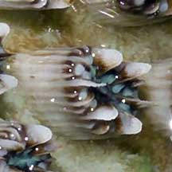 Corallite with distinctive star- or crown-shaped pattern at the top. Kusu Island, May 05 |
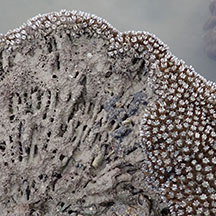 Made of up long corallites, joined near the top. Kusu Island, May 25 |
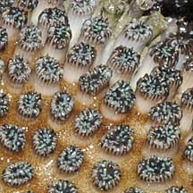 Joined near the top with a smooth common skeleton. Beting Bemban Besar, Jun 09 |
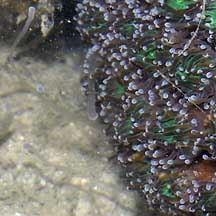 Long sweeper tentacles Pulau Semakau, Sep 05 |
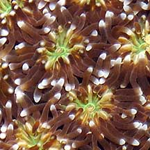 Polyps tentacles short slender with white tips. Sisters Island, Apr 04 |
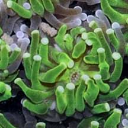 Mouth in the middle of the tentacles. Pulau Hantu, Jan 10 |
*Species are difficult to positively identify without close examination.
On this website, they are grouped by external features for convenience of display.
| Galaxy corals on Singapore shores |
On wildsingapore
flickr
|
| Other sightings on Singapore shores |
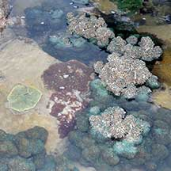 Tanah Merah Ferry Terminal, Jun 22 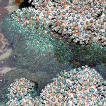 Photo shared by Loh Kok Sheng on facebook. |
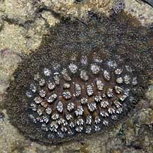 Raffles Lighthouse, Jul 06 |
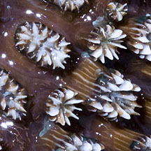 |
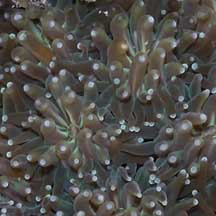 |
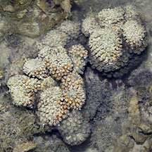 Pulau Hantu, Aug 03 |
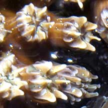 |
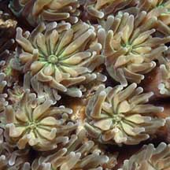 |
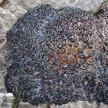 Pulau Senang, Jun 10 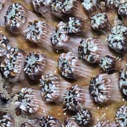 |
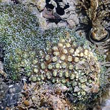 Pulau Berkas, May 10 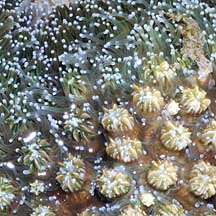 |
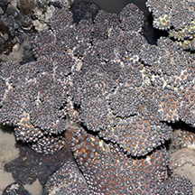 Tanah Merah Ferry Terminal, Jun 15 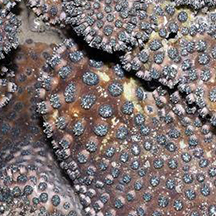 Photo shared by Loh Kok Sheng on facebook. |
| Galaxea species recorded for Singapore from Danwei Huang, Karenne P. P. Tun, L. M Chou and Peter A. Todd. 30 Dec 2009. An inventory of zooxanthellate sclerectinian corals in Singapore including 33 new records **the species found on many shores in Danwei's paper. in red are those listed as threatened on the IUCN global list.
|
|
Links
References
|